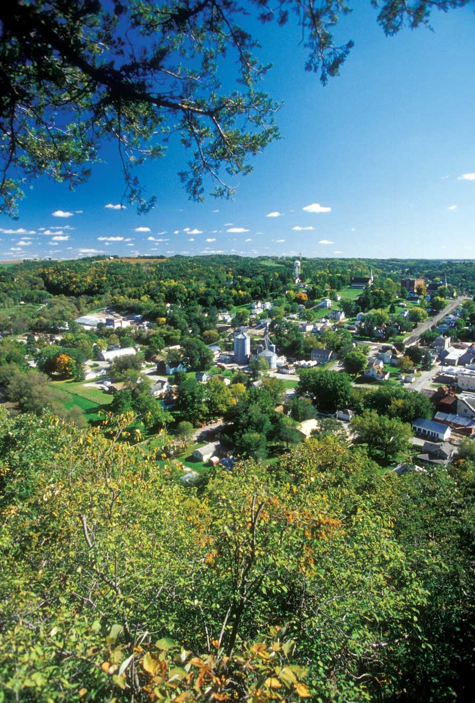
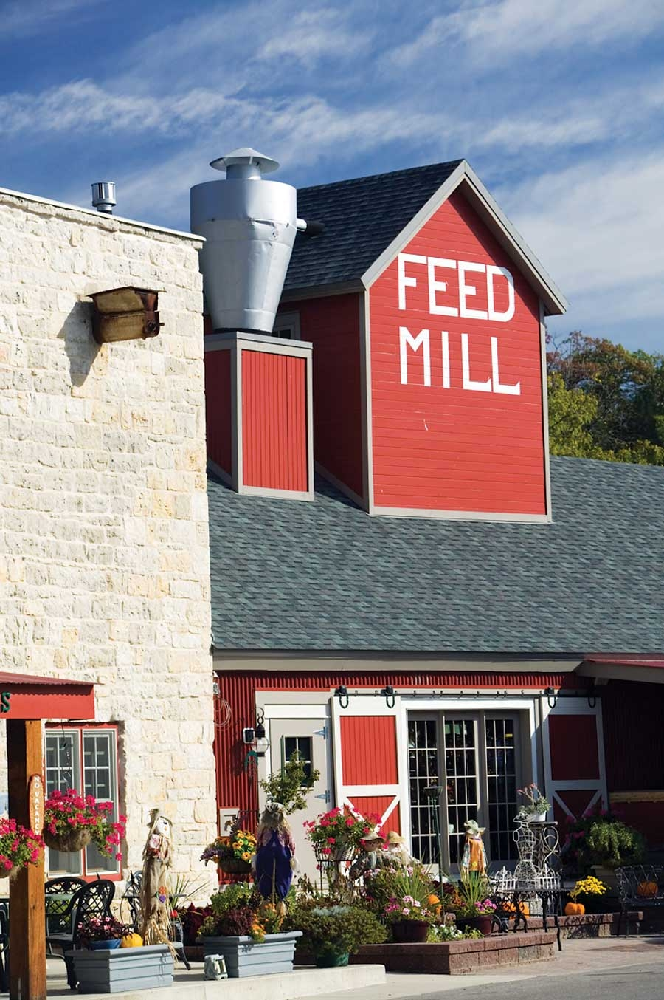

If you calculated the amount of natural and cultural offerings per capita, Lanesboro, Minn., would score off the charts. Among the towns featured in the 2009 list of Great Places You’ve (Maybe) Never Heard Of, none has such a remarkable array of options for so small a population - just under 800 residents.
Located in the southeast corner of Minnesota, Lanesboro sits on the Root River Trail, a 60-mile paved bicycle trail and one of the earliest and most successful rails-to-trails projects in the country. The trail, which rolls through a landscape of gentle hills, verdant valleys and rocky bluffs, draws numerous visitors to the town.
Two arts organizations - the Commonweal Theater Co. and the Cornucopia Art Center - form the center of the region’s arts offerings and have drawn a body of artistic souls to the town. Founded in 1989, Commonweal is cooperatively operated by its resident company members and produces six main stage shows each year, as well as an annual festival in celebration of Norwegian playwright Henrik Ibsen that features Scandinavian theater, visual art, music and dance. There’s also a series focused on world theater premiers, and a live radio show.
A number of events and activities have grown up around these organizations and the trail, including an old-time string band festival held every spring, and the Kids’ Philosophy Slam, a national organization based in Lanesboro that encourages kids to debate such weighty matters as whether greed or giving contributes more to society. There’s also Lanesboro Local, which connects local farms to local foodies.
When a small town packs in so many attractions, it runs the risk of being entirely overrun by tourists. With its population routinely outnumbered by visitors, Lanesboro sometimes suffers from this syndrome. Still, its base of seasonal and year-round residents, combined with a strong celebration of its history and natural environment, preserve the town’s identity in spite of its popularity.
Population: 788
Median Household Income: $32,206
Weather: Relatively extreme, with hot, humid summers and cold, snowy winters. Average annual snowfall is 39 inches.
What Makes It Great: A bike trail, energetic theater, active arts center and local food combine for high-quality living in this tiny town.
|
 DON POGGENSEE Welcome to Lanesboro, Minn., perhaps the most vibrant small town in America. Located in southeast Minnesota and home to less than 1,000 residents, Lanesboro has gorgeous scenery and outdoor recreation, local food networks, and an active arts and music community. |
 DANITA DELIMONT Looking for fresh, flavorful and local food in Lanesboro? Check in with Lanesboro Local, which connects local farmers to anyone who likes food. |
LANESBORO AREA CHAMBER OF COMMERCE History, culture and the arts are celebrated in the energetic little town of Lanesboro, Minn. |